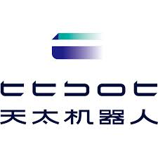
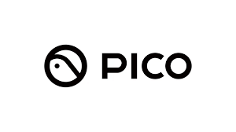
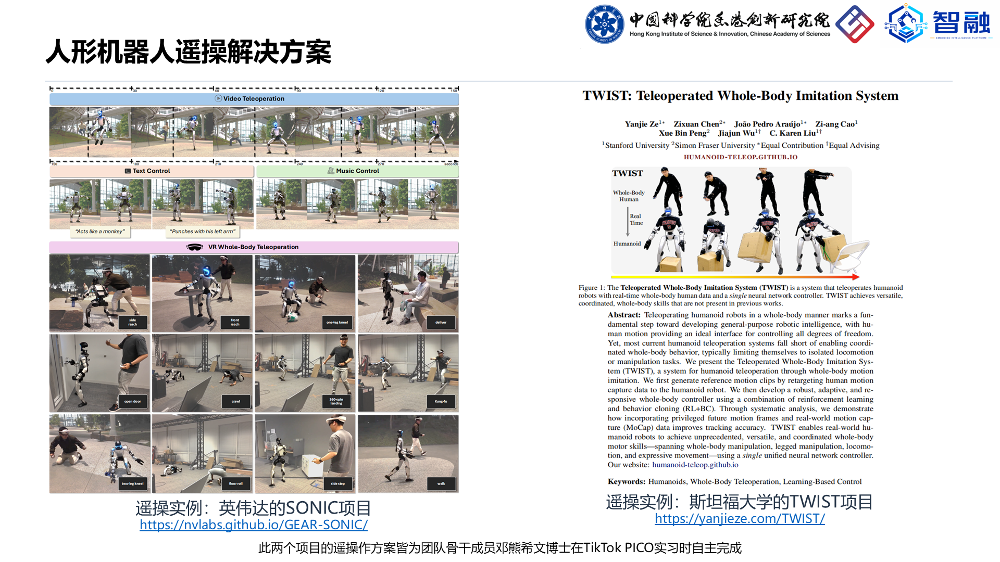
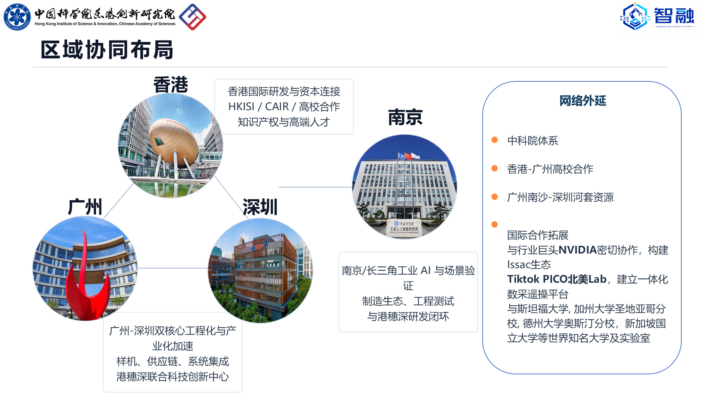

共建具身智能底层能力

天太机器人
TikTok PICOApplications
智融正在把具身智能数据采集、工位智能与机器人执行验证带入真实应用场景，连接核心伙伴、产业客户、高校实验室与区域创新网络。
Application Base
围绕底层硬件协同、产业场景验证、科研教学应用与商业试点转化，智融已形成可持续拓展的应用基础，为首批标杆场景落地和后续复制提供支撑。

天太机器人
TikTok PICO面向机器人与具身智能企业，智融持续推进数据采集、工位智能和执行验证能力在真实场景中的导入。
当前网络覆盖 Skild AI、Feather Robotics、1X、Neura Robotics、deepreach、artly、NVIDIA、福莱新材等产业相关方。
Public Signals
围绕 XR 遥操作、具身数据采集与人形机器人控制，团队成员的过往工作经验正在产业与高校公开项目中形成可见的技术延展。

团队骨干成员邓熊希文博士在 TikTok PICO 实习期间完成相关遥操作方案，相关技术路线随后在 NVIDIA SONIC 与 Stanford TWIST 等公开项目语境中被看见，体现了智融团队在遥操作数采方向的连续积累。
NVIDIA GEAR-SONIC 公开展示了面向人形机器人的遥操作能力，体现该类技术路线在产业侧的传播价值与应用想象空间。
Stanford TWIST 公开展示了 whole-body teleoperation 相关研究成果，也进一步呈现遥操作路线在高校科研、复现验证与学术传播中的延展价值。
Regional Network
智融以香港科研资源为起点，联动广深工程化能力与南京 / 长三角场景验证资源，形成面向真实应用落地的区域协同网络。

香港：国际研发与资本连接，依托 HKISI / CAIR / 高校合作与知识产权资源。
广州 / 深圳：样机、供应链、系统集成与工程化推进，支撑产业化加速。
南京 / 长三角：工业 AI、场景验证、工程测试与区域生态协同。
网络外延：连接中科院体系、港穗深高校合作资源，并持续关注 NVIDIA、TikTok PICO 北美 Lab 及多所高校实验室的公开技术交流。
Conversion Path
智融以清晰场景切入，以可验证交付推进试点转化，逐步沉淀可复用的行业解决方案模板。